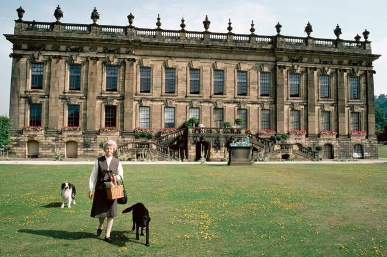
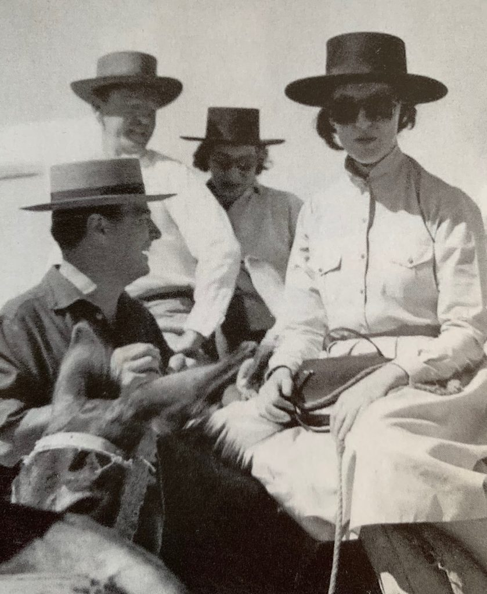
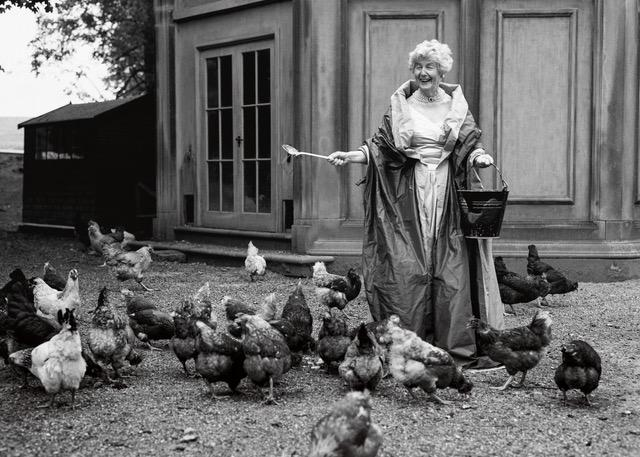
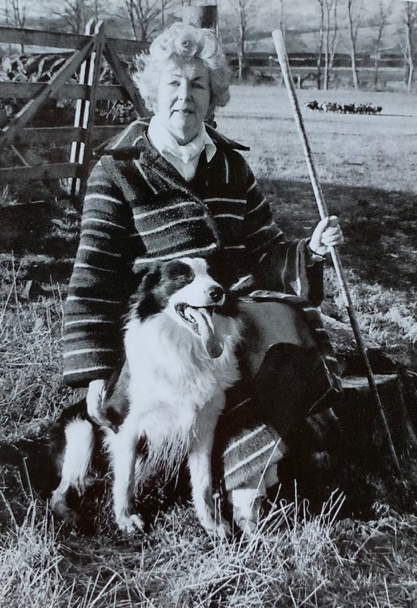
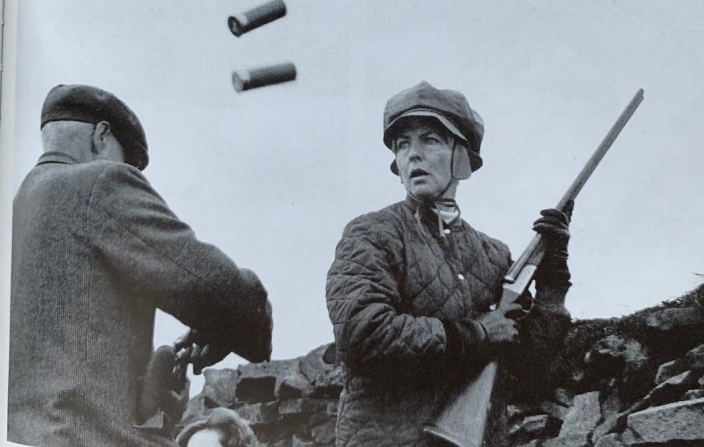

Chatelaine of Chatsworth
By Lucia Adams
.
“Happiness is very rare and totally overrated. Contentment is completely different and Chatsworth has made me content. I am the most easily pleased of the sisters.”

Deborah, the 11th Duchess of Devonshire (AKA Deborah Devonshire, her nom de plume), the youngest of the six Mitford sisters, left the finest legacy of them all as chatelaine of the finest stately home in England. Chatsworth, The “Palace on the Peak”, in the Derbyshire Dales, home of an unbroken line of succession for 16 generations of the Cavendish family, flourishes today largely due to her efforts.
When Deborah Freeman-Mitford married Andrew Cavendish, the second son of the 10th Duke of Devonshire, she never expected he would inherit the title, the splendid 16th century house and the 35,000 acre estate. She wrote to her sister Diana “I expect we shall be terrifically poor….. But think how nice it will be to have as many dear dogs and things as one likes without anyone to say they must get off the furniture.” Nancy would observe, “Debo has become the sort of English duchess who doesn’t feel the cold.”
Photo Credit: Brian Moody Scope Features
After his older brother Billy (married to Kathleen Kennedy) was killed in the war and his father died in 1950 Andrew became Duke of Devonshire and Deborah the lady of the manor of one of the kingdom’s largest, most palatial houses, a Baroque masterpiece. And it was almost demolished. When postwar tax laws imposed a levy of 80 percent of its value, about 20 million pounds, Andrew sold Hardwick Hall, some Holbeins and other masterpieces taking 24 years to settle the debt . Deborah always attributed the rescue of Chatsworth soley to her husband, never taking credit for her own Herculean efforts.
Like her father the 2nd Baron Redesdale she embraced the country life of dogs, horses, livestock, agricultural shows and equestrian events. She had a particular affection for chickens, Rhode Island Reds, Buff Cochins, Welsummers, enigmatic Burford Browns, pretty idiotic Light Sussexes, stupid White Leghorns, amiable little Warrens which ran loose on the grounds with all their “argy bargy” and pecking orders rather like humans. She wrote often about them in her collections of wickedly funny journalistic essays Counting my Chickens and Home to Roost …And Other Peckings. As Alan Bennett said in his introduction to this collection, “Deborah Devonshire is not someone to whom one can say ‘joking apart …’: with her it’s of the essence, even at the most serious and saddest of moments.” . She often dropped off chicken eggs on the doorsteps of friends such as Lucien Freud who painted her (unloved) portrait.

Surrounded by 105 acres of gardens designed by Capability Brown (who else could say that England’s most famous landscape artist “buggered up the garden” of “the dump.”)and miles of meadows and wooded hills, she could name the grounds field by field – Mrs Vickers’s Breeches, Big Backsides, Old Zac’s Pingle. In 1959 the Devonshires moved in “over the shop” then in the care of the National Trust which was rundown and in need of restoration. To help repair it for the first round of stately-home-openings Deborah became an entrepreneur who turned it into a thriving business.
As co-architect of the rescue plan and overseer of 600 employees she started The Farm Shop in 1977 one of the oldest in the country that sold beef, lamb, venison from the estate farms and park directly to the consumer along with the Duchess’s Marmalade and the Duke’s Favorite Sausages. She supervised the decor, the traditional gold-leafing of window frames to glow on gloomy November days, put in central heating, phones, new wiring and plumbing for 17 new bathrooms. This hands-on approach to running the house extended to leading tourists herself through the public rooms and frequently teaching classes. Later came restaurants, catering services, boutiques and other moneymakers, including two hotels near Chatsworth.

In 2002, the estate became self-sufficient for the first time, covering its $6.5 million annual costs with income from the Chatsworth House Trust and proceeds from entrance fees, country fairs, restaurants and shops. The house was also a family home for the Devonshires and their three children and occupied 24 (of 297) rooms that were off-limits to visitors. Today, more than five decades after they arrived, 650,000 visitors annually flock to see the magnificent estate and its attractions, from garden, park and farmyard and one of the most important collections of art and antiques in England.
A country matron who preferred to wear gumboots and anoraks, who bought her clothes at agricultural shows and Marks and Spencer (of course there were those Worth and Givenchy gowns and diamond tiaras for grand events) Deborah never resented, as did her sisters, being denied an education. She refused to learn French because it interfered with shooting season and rarely if ever read books, “how I hate books esp about my family”; she said her husband and friends “did not much go in for learning.” Her own favorite reading was the British Goatkeeper’s Monthly, Fancy Fowl magazine and yes, Beatrix Potter. The epigraph for her first book on Chatsworth, The House, quoted Hobbes, “Reading is a pernicious habit. It destroys all originality of sentiment.” She did eventually write ten books claiming that it was easier to write a book than read one.
She called paintings “dabs” but at least on one occasion went to the Tate when “Cake”, her name for the Queen Mother, “in crinoline and diamonds glittering from top to toe” had her insight “like a rabbit and a snake”. She did admire her enormous charm and gaiety, the dinner guest who insisted on mutton not lamb after endless toasts. Not a great music lover Deborah attended two operas in her life far preferring Elvis Presley after seeing his (posthumous) band perform in Manchester. She visited Graceland and bought an Elvis telephone proudly displayed at Chatsworth. When a gullible interviewer asked who she would rather have tea with Adolf Hitler (who she met in 1937) or Elvis Presley with astonishment, she answered: “Well, Elvis of course! What an extraordinary question.”
As a guest of the Queen and Prince Philip for a Sandringham shoot she was overwhelmed by their extravagance. An advocate of field and blood sports, shooting had been her very favorite since she first packed up a gun as a teenager. She rarely missed grouse shooting in August and pheasant shooting November through January, loving all that went with it, friends, country life, conviviality though she would far rather talk to the gun loaders than politicians or other guests. At a shoot at ancient Bolton Abbey, a Cavendish property in Skipton, North Yorks.,over four days her party bagged over a thousand birds. She criticized a (non-aristocratic) friend saying his description of a shoot was all wrong, “like a Hollywood film about England.”
Of all the BRF she loved her friend Prince Charles, another poultry fan, the best. He came to Chatsworth every October to make a start on signing the sack loads of Christmas cards he was expected to send each year. The Devonshires attended his wedding to Diana, a “King’s Evil type” of healer and definitely “not easy”, a “great spectacle” where a scrum of dowagers “like a Brixton riot” scrambled to get the blue and silver balloons. She was appalled at Morton’s impertinent disloyal book.
They were also guests at Charles’ marriage to Camilla which was “a total ripping success”; she sat next to Brig. Andrew Parker Bowles which she thought must have seemed odd to him seeing his wife marrying another, “they’re all friendly but even so.” She loved that Charles invited a housemaid and her husband to the wedding. Also attending were “freaks” like former PM Harold Wilson ”with his garter stitched on to a sort of blazer like house colours for a cricket match”.
It was during the debutante season of 1938 that Deborah first met the young “dull” JFK and kept in close touch after the death of Kathleen in 1948, carefully following his political progress. The Devonshires were invited as guests of honour for his inauguration (“Jack’s coronation”) which Deborah reluctantly attended since it meant missing the pheasant season. Calling him the Loved One she attended his sad funeral and shed some tears. She thought Jackie rather weird,”She is a queer fish. Her face is one of the oddest I ever saw. It is put together in a very wild way.

Deborah discovered she had a knack for writing in her Sixties when Andrew’s uncle PM Harold MacMilllan suggested she write a book about Chatsworth in 1982— the first of several she would write on the subject. Farm Animals 1991 was an illustrated history of how they raise sheep, cattle, cows, ducks, geese, pigs, horses and of course those chickens at Chatsworth. Her respect and admiration for the farmworkers rivals her love for animals, the hardworking, highly skilled men (no women here), burly teams of woodmen, farmers, hedgemen, butchers, dry stone wallers— all “bumpkin stuff”. We are fortunate that the Duchess of Devonshire took to writing for we have, as a matter of record, the forthright and candid distillation of an aristocrat’s views at a moment in time.
Speaking of her role as President of the Royal Smithfield Club’s 50 farmers and butchers she wrote, “I really love these men”. She was also President of the Breeders Survival Trust and could recite a flock of sheeps’ afflictions – “Orf scrapie, swayback, blackleg, water mouth or rattlebelly, scab and footrot, scad or scald.” Proudest of being elected President of the Royal Agricultural Society she attended National Hedging and Walling Competitions, Framework Knitters’ Company meetings, was great friends with county council workmen opening paths for tourists on the estate.

Her best friend in childhood had been the family’s old groom, Hooper, “the human end of the horses; the stables were my heaven”. She said she was never a snob, considering class an irritant: “The biggest pest that has ever been invented”, and she and Andrew sided with those who believed titles should be abolished since they “are meaningless because peers are no longer legislators.” Their point of view was not shared and of course they persist.
Claiming to be apolitical unlike the extremist sisters DIana, Unity and Decca she was in fact a Conservative Tory; she particularly disliked Labour’s Tony Blair “a stranger to common sense” (and “the frightful Cheri”) who presided over the fox-hunting ban. At 77, she made a pilgrimage to London for the Countryside Alliance March, carrying a placard stating her defiance of the proposed ban on the sport: “I’m ready to go to jail.” The Devonshires were prepared to break the law to allow the sport to continue on their estate, confronting the league of complainers whining about everything, “foxhounds, crowing cockrels, quarrying” and declaring “long live banned work and play!”
Most of her most memorable writing and the primary source for her autobiography Wait for Me! were from the one book you must read, her correspondence over several decades with Patrick Leigh Fermor, In Tearing Haste. The brilliant travel writer, adventurer (and social Alpinist!) and the aristocratic matron were breezy and candid with radically different lives and styles but he admired her “flat-out, headlong way of writing” the “whizz bang planchette style hitting the nail on the head without looking”.

Deborah Devonshire was no feminist; she preferred men, even cads (her husband was notoriously one until he gave up drinking) disliked loud English ladies with dirty diamonds, was wary of “the sort of woman who wants to join a gentlemen’s club”, female weather forecasters, supercilious assistants at make-up counters, girls with slouching shoulders and especially female interviewers and TV presenters.
“Recently a young journalist came to interview me about what I was doing the day war broke out. During the course of the interview I recounted the deaths of my only brother, my husband’s only brother, a brother in law and my four best friends. “So,” she said, did the war affect you in any way?”
Other dislikes were the words ‘environment’, ‘conservation’, ‘leisure’ and the ubiquitous “heritage” applied to anything and everything, intis (intellectuals), dietary fads, skimmed milk. She liked Bovril, telegrams, spring cleaning, long letters, Beatrix Potter, (again!) wildflowers, fried mushrooms, Shetland ponies (she had 55) scythes, brogues, silence, border collies, and her favorite book, Anatomy of Desserts, 1923, especially the chapter on gooseberries, the Hue and Cry, Heart of Oak, Dan’s Mistake, Queen of the Rule. She liked wives and listed her occupation in Who’s Who as “housewife” and told a New York Times reporter asking questions about her career as a writer, “I’m a housewife.”

With Charles and Camilla at the Highland Games
With the death of Andrew in 2004 Deborah became the Dowager Duchess and moved to an 18th century house, the Old Vicarage, in the village of Edensor while her son, Peregrine, became the 12th Duke of Devonshire. She was made Dame Commander of the Royal Victorian Order (DCVO) in 1999 for her service to the Royal Collection Trust and was awarded the honorary Doctor of Literature by Sheffield University. At the time of her death at 94 in 2014 Prince Charles said, “My wife and I were deeply saddened to learn of the death of the Dowager Duchess of Devonshire, whom both of us adored and admired greatly.”